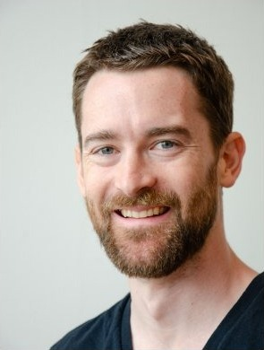

Team

Daniel Alexander Smith
I’m a graduate student in Design Engineering at Harvard. I design intelligent material systems for structures at the scale of a city.
For more than ten years, I’ve led parametric software development, design automation and manufacturing for high-profile installations. I’ve worked with MIT, Princeton, the University of Stuttgart’s IntCDC, Google, Meta, UAP and Epson, as well as public and private institutions around the world.
Anqi Wang
I’m a graduate student in Design Engineering at Harvard. I earned my Bachelor of Architecture from SCI-Arc in 2023, then worked as an Architectural Job Captain in Los Angeles.
I care about architecture that is meaningful and makes an impact, and I’m just as interested in how a project is presented. I enter architectural competitions to explore what a space can be.
Outside of work, I dance Latin, play electronic piano and have lately been learning to snowboard.